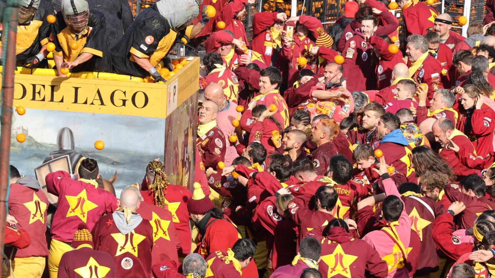
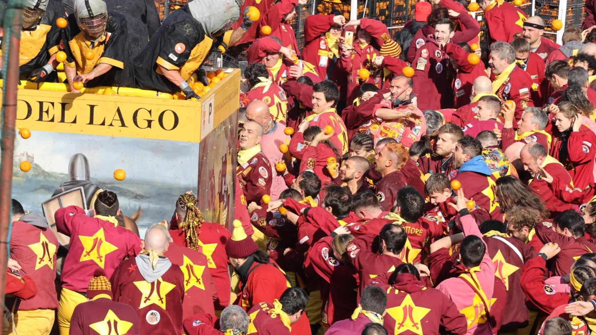

Ivrea è una città situata nella regione del Piemonte, nel nord-ovest dell'Italia. La sua storia risale all'epoca romana, quando fu fondata come municipio romano intorno al 100 a.C. Tuttavia, la storia di Ivrea è strettamente legata al periodo medievale. Durante il medioevo, Ivrea divenne una delle città più importanti del nord Italia. Fu una sede vescovile e successivamente una contea sotto il controllo dei signori locali, noti come i signori di Ivrea. Nel 1002, un membro della famiglia dei signori di Ivrea, Arduino d'Ivrea, riuscì a diventare re d'Italia per un breve periodo. Durante il periodo medievale, Ivrea divenne anche un importante centro per la produzione di ferro e acciaio. La sua posizione strategica lungo il fiume Dora Baltea e la presenza di miniere di ferro nella regione resero Ivrea un importante centro per l'industria metallurgica. Nel corso dei secoli successivi, Ivrea passò attraverso diverse dominazioni, tra cui i Savoia, i francesi e gli austriaci. Nel XIX secolo, con l'unificazione dell'Italia, Ivrea divenne parte del Regno d'Italia. Durante il XX secolo, Ivrea acquisì una grande importanza industriale grazie alla presenza della Olivetti, un'azienda italiana di macchine per scrivere e computer. L'Olivetti, fondata nel 1908 da Camillo Olivetti, ha avuto un impatto significativo sulla città, portando prosperità economica e cambiamenti sociali. L'azienda ha anche investito nella progettazione di edifici modernisti e residenze per i suoi dipendenti, contribuendo a definire l'aspetto architettonico di Ivrea. Negli ultimi decenni, Ivrea ha affrontato sfide economiche legate alla crisi dell'industria manifatturiera e alla trasformazione tecnologica. Tuttavia, la città ha mantenuto una forte identità culturale e storica. Nel 2018, Ivrea è stata riconosciuta come Patrimonio dell'Umanità dell'UNESCO per il suo caratteristico carnevale storico, noto come "Battaglia delle Arance". Durante questo evento, le persone si dividono in squadre e si lanciano arance a vicenda in un'imitazione di una rivolta popolare storica. Oggi, Ivrea è una città di dimensioni medio-piccole con una popolazione di circa 24.000 abitanti. Conserva un patrimonio architettonico significativo, tra cui la Cattedrale di Santa Maria Assunta, il Castello di Ivrea e gli edifici modernisti dell'Olivetti. La città è anche nota per la sua bellezza naturale, essendo circondata dalle Alpi e situata vicino al lago di Viverone.